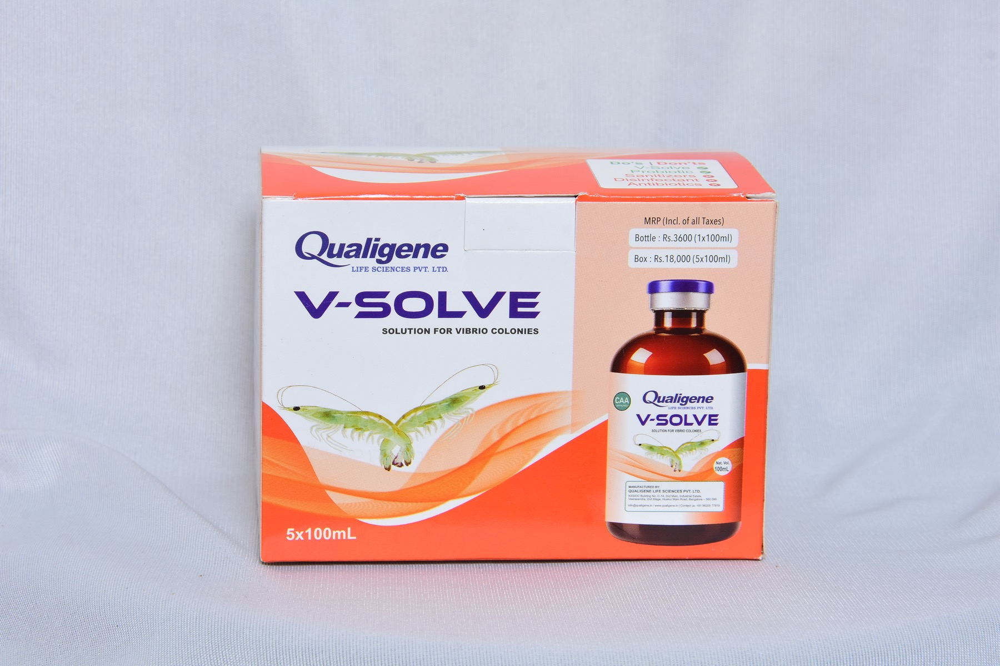
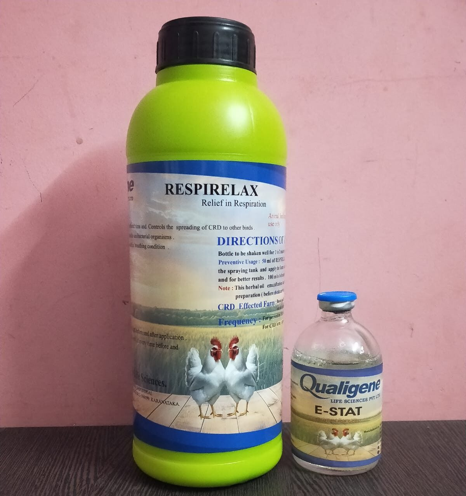
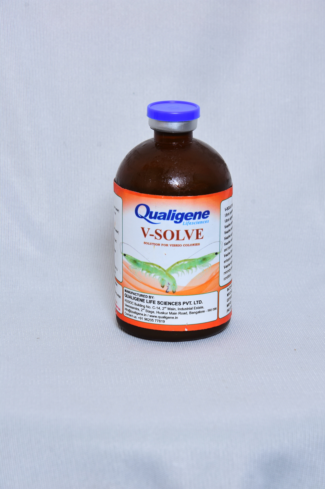
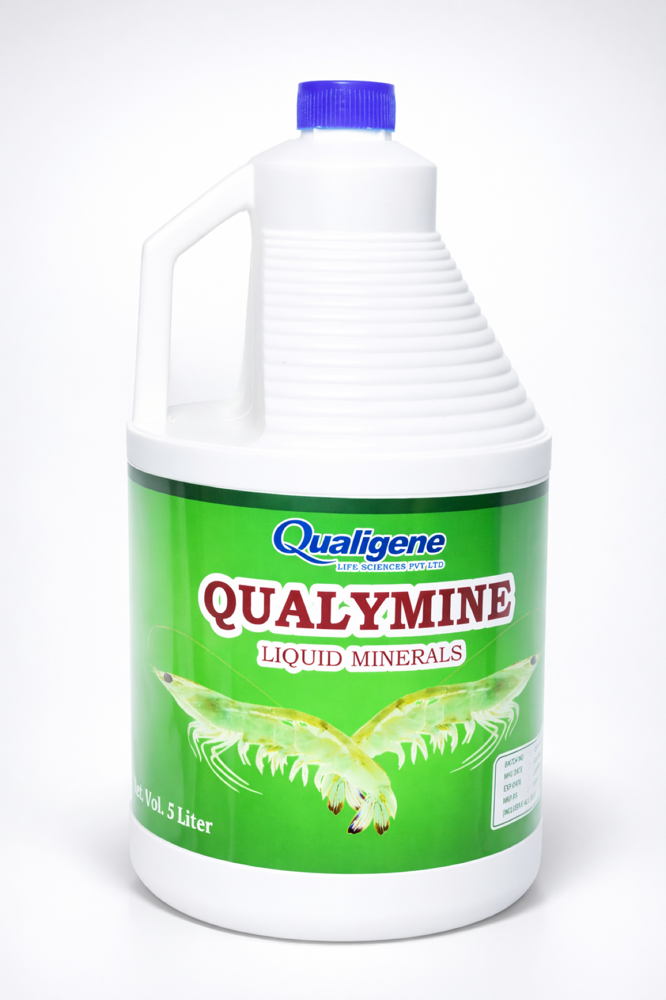

Research-driven aqua and poultry care
Advanced microbial solutions for healthier aquaculture systems and stronger flocks.
Qualigene Lifesciences is a research-driven company developing practical solutions for poultry, aquaculture, veterinary, and probiotic applications. Our direction is clear: improve farm outcomes today and build toward a future beyond antibiotic-heavy health routines.
Qualigene Lifesciences combines aquaculture focus, poultry expertise, and research-led product development into a cleaner, trust-led, premium presentation built for real commercial use.
About Qualigene
A successful and research-driven company built for aquaculture, poultry, and high-performance health solutions.
Company overview
Qualigene Lifesciences is a startup with qualified and experienced professionals having exposure to pharmaceutical research and development, veterinary products, and aquaculture product development.
The vision is to replace antibiotics with smarter microbial and bacteriophage-oriented solutions in poultry and aquaculture sectors while improving field performance and export-quality readiness.
Registered details
- Company: Qualigene Life Sciences PVT LTD
- GST: 29AABCQ0141Q1Z6
- PAN: AABCQ0141Q
- Address: Building No: 353/C14, KSSIDC Industrial Estate, Veerasandra 2nd Stage, Anekal Taluka, Bengaluru Urban, Karnataka 560100, India
Solutions
Two active sectors, one common goal: healthier production with better control.
Probiotic support for healthier flocks
The live Qualigene message highlights poultry probiotics designed to boost flock health, reduce harmful bacteria, and support growth with a more dependable microbial balance.
Water quality and farm care improvement
Qualigene’s aquaculture range is positioned around improving water quality, strengthening farm care, and supporting healthier aquaculture systems with practical field-use formulations.
Advanced health management
The company direction emphasizes advanced research, process upgrades, and long-term movement toward bacteriophage-led alternatives for sustainable poultry and aquaculture health programs.
Product Portfolio
Current Qualigene products presented with clearer positioning and stronger buying context.

Farm Care
Positioned for healthier water conditions, stronger routine farm-care support, and more stable aquaculture performance in demanding production environments.
View Product Details
V-Solve
A focused aquaculture solution within the core portfolio, presented for pond-health support and daily management needs.
View Product Details
Qualymine
A liquid minerals product from the Qualigene range, presented with real product photography for a more complete and visually credible portfolio experience.
View Product Details
Enterodragon
An animal feed supplement targeting EHP in shrimp culture — supports gut health, energy conversion, and stronger pond performance.
View Product Details
ProWhite-X
Controls white gut effectively, promotes healthy shrimp culture, and improves water quality. Healthy Gut, Healthier Harvest.
View Product Details
E-STAT
Qualigene's probiotic poultry solution for flock health — supporting microbial balance and healthier production with a research-driven formulation.
View Product DetailsProduct Gallery
Real pack shots and bottle views that make the brand feel tangible and market-ready.
V-Solve
Retail and carton presentation

V-Solve
Product bottle close-up
Farm Care
Water & soil probiotic pack

Qualymine
Liquid minerals product image
Why Choose Us
Sharper trust signals built from Qualigene’s live positioning and certifications.
Proven innovation
Market traction with innovative and cost-effective solutions serving aqua and poultry farmers in active southern and eastern regions.
Future-ready vision
A clear strategic move from antibiotic-reliant products toward bacteriophage-oriented and healthier environmental solutions with stronger long-term sustainability value.
Cutting-edge R&D
A 5000 sq. ft. facility with calibrated equipment and continuous process upgrades focused on quality and cost-effectiveness.
Diverse expertise
Strong experience across manufacturing, quality control, research, aquaculture, poultry, and broader life-sciences product development.
Compliance & Reach
Production strength, certifications, and market presence that support buyer confidence.
Certified systems
Company-level GMP, HACCP, and ISO certification support a stronger trust foundation for customers and partners.
Documented products
CAA files are available for key products, helping commercial teams respond with faster validation and clearer documentation.
Regional relevance
Active market focus across aquaculture and poultry regions including Andhra Pradesh, Tamil Nadu, Goa, and Odisha.
Certifications
Compliance documents and product CAA files available as direct downloads.
Company certifications
GMP Certificate HACCP Certificate ISO CertificateProduct CAA documents
Farm Care CAA V-Solve CAA Entero-Dragon CAA ProWhite-X CAAContact Qualigene
Connect for aquaculture, poultry, and product enquiries.
Contact Qualigene for aquaculture, poultry, veterinary, distribution, and product documentation enquiries. The site is structured to convert interest into direct product conversations.